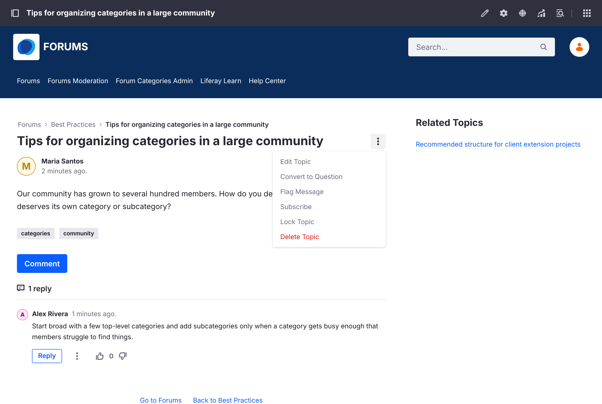

Moderating
Moderators keep discussions on topic and act on reports from the community.
Important
Moderation needs the Forum Moderator role, or Liferay's Administrator role. Moderators see the Forums Moderation page in the forum's navigation, and moderation actions in each topic's Options menu. See Roles and Permissions.
